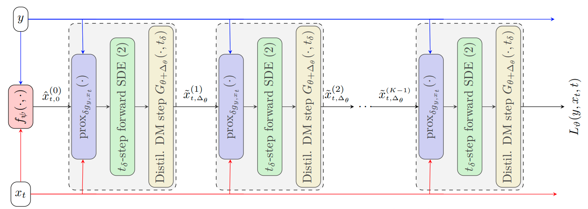
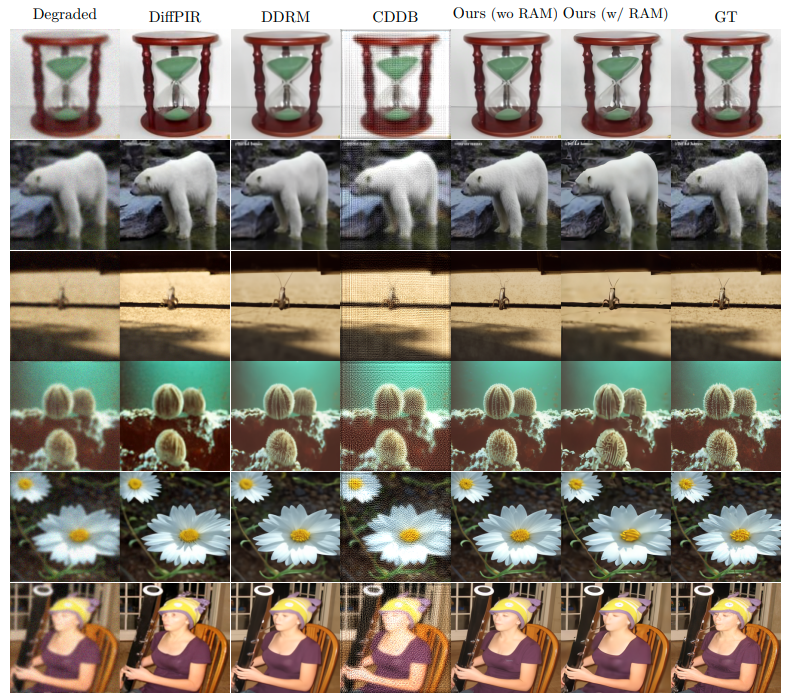
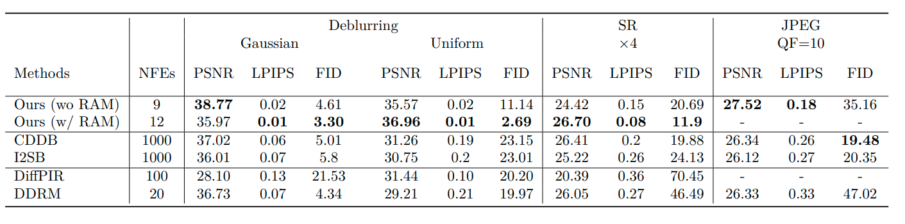
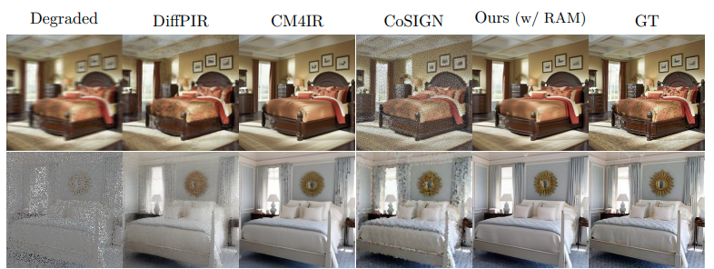
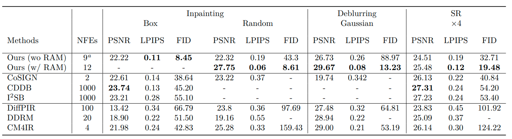

Abstract
Diffusion models (DMs) have emerged as powerful image priors in Bayesian computational imaging. Two primary strategies have been proposed for leveraging DMs in this context: Plug-and-Play methods, which are zero-shot and highly flexible but rely on approximations; and specialized conditional DMs, which achieve higher accuracy and faster inference for specific tasks through supervised training. In this work, we introduce a novel framework that integrates deep unfolding and model distillation to transform a DM image prior into a few-step conditional model for posterior sampling. A central innovation of our approach is the unfolding of a Markov chain Monte Carlo (MCMC) algorithm—specifically, the recently proposed LATINO Langevin sampler—representing the first known instance of deep unfolding applied to a Monte Carlo sampling scheme. We demonstrate our proposed unfolded and distilled samplers through extensive experiments and comparisons with the state of the art, where they achieve excellent accuracy and computational efficiency, while retaining the flexibility to adapt to variations in the forward model at inference time.
UD2M Model
This diagram provides an overview of the UD2M model architecture and its key components. We discuss the motivation behind the model, its design principles, and the expected outcomes of our research in the original paper.
- Given the observation $\vy$, the time-grid $0=t_0 < t_1 < \cdots < t_N=T$
- Sample $\vx_{t_N} \sim \mathcal{N}(0, \mathbb{I})$ ▷ Initialize reversed diffusion
- For $n = N,\ldots,1$
- Set $\hat{\vx}_{0} \;\gets\; \tilde{x}^{\Delta_{\theta}}_{t_n}$ using $\boldsymbol{L}_{\vartheta}$ (see the diagram above) ▷ Unfolded sample targeting $p_0(\vx_0\mid\vx_t, \vy)$
- Sample $\vx_{t_n}\sim p_{t_{n-1}}(\vx_{t_{n-1}}\mid\hat{\vx}_0, \vx_{t_n})$ ▷ Reverse DDIM step
- Return $\vx_{t_0}$
Training Objective
To train our network to sample from the conditional distribution
\( p(\mathbf{x}_0 \mid \mathbf{y}, \mathbf{x}_t) \), we use a combination of
reconstruction and adversarial losses. This hybrid objective has been shown
to significantly improve sample quality compared to relying on reconstruction
loss alone.
More precisely, the generator objective is defined as:
\[
\mathcal{L}^G(\Delta_{\theta}, \psi)
= \mathcal{L}_{Adv}(\Delta_{\theta}, \psi, \phi)
+ \omega_{\ell_2}\,\mathcal{L}_{\ell_2}(\Delta_{\theta}, \psi)
+ \omega_{PS}\,\mathcal{L}_{PS}(\Delta_{\theta}, \psi).
\]
The discriminator objective is given by:
\[
\mathcal{L}^D(\phi)
= \mathcal{L}_{Adv}(\Delta_{\theta}, \psi, \phi)
+ \omega_{GP}\,\mathcal{L}_{GP}(\phi),
\]
where, \(\omega_{\ell_2}\), \(\omega_{PS}\), and \(\omega_{GP} > 0\) are
regularization coefficients. The loss \(\mathcal{L}^G\) is used to optimize
the conditional diffusion model, while \(\mathcal{L}^D\) is used to train the
discriminator. For additional details, we refer the reader to the original
paper.
Results




Slides
BibTeX
@article{mbakam2025learning,
title={Learning few-step posterior samplers by unfolding and distillation of diffusion models},
author={Charlesquin Kemajou Mbakam and Marcelo Pereyra and Jonathan Spence},
journal={Transactions on Machine Learning Research},
issn={2835-8856},
year={2025},
url={https://arxiv.org/abs/2507.02686},
note={}
}